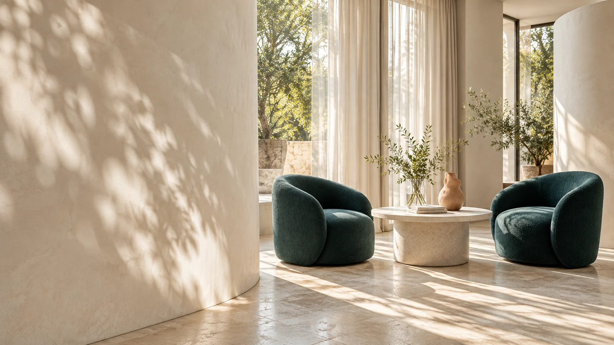

Skin & everyday care
Skin consultation
Talk through your everyday routine, how your skin feels and the habits you want to understand.
30-minute concept session

A FICTIONAL AESTHETIC ATELIER
Bring your questions about skin, appearance and change. Begin with a conversation, at your own pace.
Three ways to begin. Choose the questions you want to make space for.
Talk through your everyday routine, how your skin feels and the habits you want to understand.
30-minute concept session
Look at the features you value, the references you like and what feels true to your own appearance.
30-minute concept session
Discuss the changes you have noticed, what matters to you now and the questions you want to ask.
30-minute concept session
Your questions set the direction.
There is no single way to feel like yourself. A first conversation can begin with your routine, a photo you connect with, or a change you are still finding words for.
Vélune imagines a place for that pause: two chairs, softened daylight and time to put your thoughts in order. You choose what to explore, and what can wait.
Discover the experienceBegin with the questions you bring, rather than an expectation of how you should look.
Make room for plain explanations, thoughtful questions and a pace that feels comfortable.
A first conversation is a starting point. You decide what, if anything, comes next.
A little preparation for a more comfortable first conversation.
A first conversation, thoughtfully imagined.
Choose a consultation direction, or let the interest guide help you find a starting point.
Explore illustrative dates and times, then choose your preferred conversation language.
Review your request and download a demo itinerary. No appointment is made.
An imagined atelier. An entirely fictional setting.
A request is a preferred time, rather than a confirmed appointment. In this demo, no request is sent to the clinic. A real appointment would require a separate confirmation.
Of course. Choose “Help me find a starting point” in the booking form, or try our short interest guide. It simply helps organise your questions.
Vélune is an independent fictional brand. The consultation categories, spaces, portraits and times are illustrative, with no real clinic or appointment availability.
Please use the sample details provided. Keep medical information, photographs, identity documents and real contact details out of this demonstration.
Try an English or Mandarin preference. This fictional brand has no real reception team or language service.
Choose a direction and a time that suits you. Try the complete booking experience.
DEMO REQUEST COMPLETE
You’ve completed the booking experience.
This demonstration has not contacted the clinic.
The calendar file contains the demo time and topic only. No contact details.